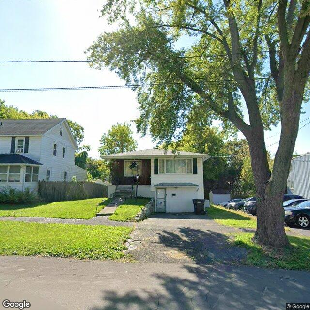

Property entry
369 Willumae Dr
Published 2026-07-30T09:03:05+00:00
Parcel key: 003-17-050

Driveway cracking · mediumAI image read
A split-level single-family residential property with a front-facing garage, paved driveway, and a grass yard, partially shaded by a large tree.
Property type guess: single_family
Visible conditions
- Paved driveway shows surface cracking and wear
- Siding and windows appear intact from this distance
- A large mature tree is situated in the front right yard, partially obscuring the right side of the property
Condition scores
- Roof
- good
- Siding Or Facade
- good
- Windows Doors
- good
- Porch Or Entry
- good
- Yard Or Lot
- fair
- Trash Debris
- none_visible
- Vegetation Overgrowth
- none_visible
Visible flags
- Boarded Windows Or Doors
- no
- Fire Damage Visible
- no
- Structural Damage Visible
- no
- Vacancy Signs Visible
- no
- Active Construction Visible
- no
Possible image-only flags
- Driveway pavement exhibits cracking and surface wear.
AI review boxes
- Driveway cracking: The paved driveway surface shows visible cracking and deterioration.
Review reasons
- Possible image-only issue
Image quality
- Available
- True
- Bytes
- 106623
- Needs Rerun
- False
['The large tree in the foreground partially obstructs the right side of the structure and yard.']
ACS tract context
Census Tract 2; Onondaga County; New York
- Total population
- 3511
- Median household income
- 51848
- Poverty rate
- 28.1
- Housing units
- 1686
- Vacancy rate
- 14.7
- Renter-occupied share
- 50.1
- Median gross rent
- 146700
OpenStreetMap nearby
60 meter search radius
Summary
- 20 mapped building footprints
Notable mapped features
- building: apartmentsway #525726247
Vacant properties 0
No matching records found in this feed.
Rental registry 1
- Latitude
- 43.07815209
- Longitude
- -76.15594669
- NeedsRR
- Yes
- ObjectId
- 988
- PropertyAddress
- 365 Willumae Dr
- RRisValid
- No
Code violations 0
No matching records found in this feed.
Unfit properties 0
No matching records found in this feed.